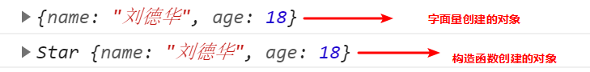

1.面向过程与面向对象
1.1 面向过程
面向过程就是分析出解决问题所需要的步骤，然后用函数把这些步骤一步一步实现，使用的时候再一个一个的依次调用就可以了。
1.2 面向对象
面向对象是把事务分解成为一个个对象，然后由对象之间分工与合作。
1.3 面向过程与面向对象对比
| 面向过程 | 面向对象 | |
|---|---|---|
| 优点 | 性能比面向对象高，适合跟硬件联系很紧密的东西，例如单片机就采用的面向过程编程。 | 易维护、易复用、易扩展，由于面向对象有封装、继承、多态性的特性，可以设计出低耦合的系统，使系统 更加灵活、更加易于维护 |
| 缺点 | 不易维护、不易复用、不易扩展 | 性能比面向过程低 |
2.对象与类
2.1 对象
对象是由属性和方法组成的，是一个无序键值对的集合，指的是一个具体的事物
- 属性：事物的特征，在对象中用属性来表示（常用名词）
- 方法：事物的行为，在对象中用方法来表示（常用动词）
1
2
3
4
5
6
7
8
9
10
11
12
13
14
15
//以下代码是对对象的复习
//字面量创建对象
var ldh = {
name: '刘德华',
age: 18
}
console.log(ldh);
//构造函数创建对象
function Star(name, age) {
this.name = name;
this.age = age;
}
var ldh = new Star('刘德华', 18)//实例化对象
console.log(ldh);

2.2 类
在 ES6 中新增加了类的概念，可以使用 class 关键字声明一个类，之后以这个类来实例化对象。
类抽象了对象的公共部分，它泛指某一大类（class）对象特指某一个，通过类实例化一个具体的对象。
2.2.1 创建类
- 语法:
1
2
3
4
5
6
//步骤1 使用class关键字
class name {
// class body
}
//步骤2 使用定义的类创建实例 注意new关键字
var xx = new name();
- 示例
1
2
3
4
5
6
7
8
9
10
11
// 1. 创建类 class 创建一个 明星类
class Star {
// 类的共有属性放到 constructor 里面
constructor(name, age) {
this.name = name;
this.age = age;
}
}
// 2. 利用类创建对象 new
var ldh = new Star('刘德华', 18);
console.log(ldh);
以上代码运行结果:

通过结果我们可以看出,运行结果和使用构造函数方式一样
2.2.2 类创建添加属性和方法
1
2
3
4
5
6
7
8
9
10
11
12
13
14
15
16
// 1. 创建类 class 创建一个类
class Star {
// 类的共有属性放到 constructor 里面 constructor是 构造器或者构造函数
constructor(uname, age) {
this.uname = uname;
this.age = age;
} //------------------------------------------->注意,方法与方法之间不需要添加逗号
sing(song) {
console.log(this.uname + '唱' + song);
}
}
// 2. 利用类创建对象 new
var ldh = new Star('刘德华', 18);
console.log(ldh); // Star {uname: "刘德华", age: 18}
ldh.sing('冰雨'); // 刘德华唱冰雨
以上代码运行结果:

注意哟:
- 通过class 关键字创建类, 类名我们还是习惯性定义首字母大写
- 类里面有个constructor 函数,可以接受传递过来的参数,同时返回实例对象
- constructor 函数 只要 new 生成实例时,就会自动调用这个函数, 如果我们不写这个函数,类也会自动生成这个函数
- 多个函数方法之间不需要添加逗号分隔
- 生成实例 new 不能省略
- 语法规范, 创建类 类名后面不要加小括号,生成实例 类名后面加小括号, 构造函数不需要加function
2.2.3 类的继承
- 语法
1
2
3
4
5
6
7
// 父类
class Father{
}
// 子类继承父类
class Son extends Father {
}
- 示例
1
2
3
4
5
6
7
8
9
10
11
12
13
14
class Father {
constructor(surname) {
this.surname= surname;
}
say() {
console.log('你的姓是' + this.surname);
}
}
class Son extends Father{ // 这样子类就继承了父类的属性和方法
}
var damao= new Son('刘');
damao.say(); //结果为 你的姓是刘
以上代码运行结果:

子类使用super关键字访问父类的方法
1 2 3 4 5 6 7 8 9 10 11 12 13 14 15 16 17 18 19 20
//定义了父类 class Father { constructor(x, y) { this.x = x; this.y = y; } sum() { console.log(this.x + this.y); } } //子元素继承父类 class Son extends Father { constructor(x, y) { super(x, y); // 使用super调用了父类中的构造函数 } } var son = new Son(1, 2); son.sum(); //结果为3
注意:
继承中,如果实例化子类输出一个方法,先看子类有没有这个方法,如果有就先执行子类的
继承中,如果子类里面没有,就去查找父类有没有这个方法,如果有,就执行父类的这个方法(就近原则)
如果子类想要继承父类的方法，同时在自己内部扩展自己的方法,利用super 调用父类的构造函数,super 必须在子类this之前调用
1 2 3 4 5 6 7 8 9 10 11 12 13 14 15 16 17 18 19 20 21 22 23 24 25 26 27 28 29
// 父类有加法方法 class Father { constructor(x, y) { this.x = x; this.y = y; } sum() { console.log(this.x + this.y); } } // 子类继承父类加法方法 同时 扩展减法方法 class Son extends Father { constructor(x, y) { // 利用super 调用父类的构造函数 super 必须在子类this之前调用,放到this之后会报错 super(x, y); this.x = x; this.y = y; } subtract() { console.log(this.x - this.y); } } var son = new Son(5, 3); son.subtract(); //2 son.sum();//8
以上代码运行结果为:

时刻注意this的指向问题,类里面的共有的属性和方法一定要加this使用.
- constructor中，this指向的是new出来的实例对象
- 自定义的方法，一般也指向的new出来的实例对象
- 绑定事件之后，this指向的就是触发事件的事件源
在 ES6 中类没有变量提升，所以必须先定义类，才能通过类实例化对象


3.应用案例
项目名称：面向对象版tab 栏切换
功能需求：
- 点击 tab栏,可以切换效果
- 点击 + 号, 可以添加 tab 项和内容项
- 点击 x 号, 可以删除当前的tab项和内容项
- 双击tab项文字或者内容项文字可以修改里面的文字内容
案例思路：
- 将页面完全解析到程序变量中，使得页面中的每个元素都能够可控；
- 在类中指定元素的方法和属性，实现功能